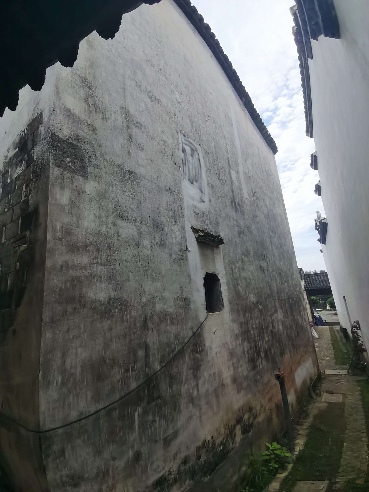
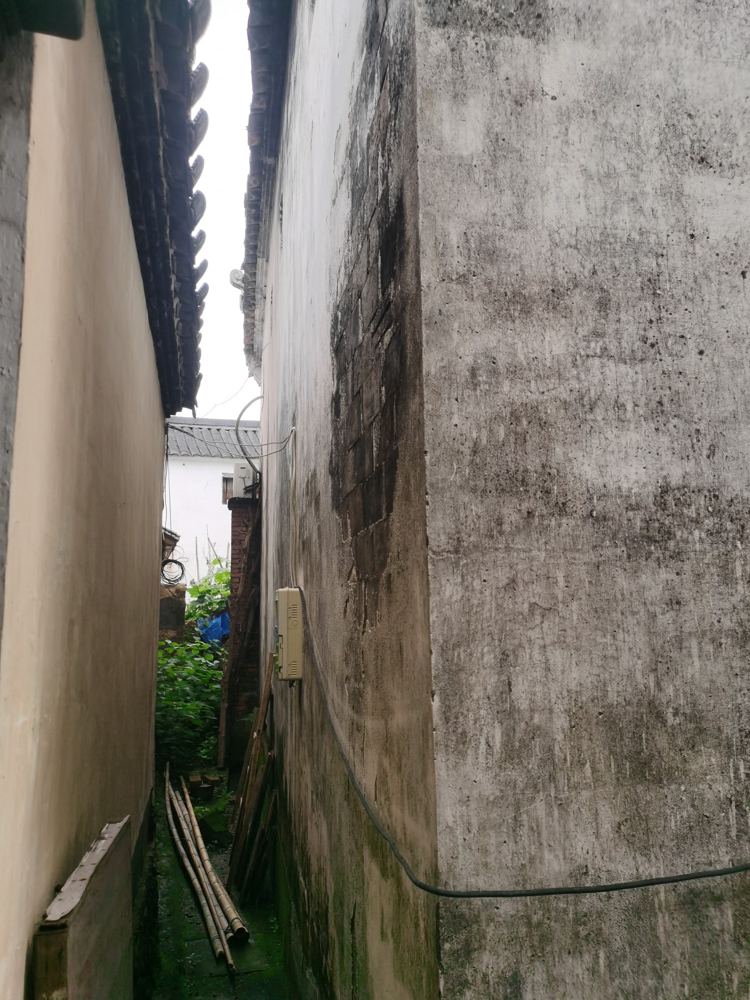

国保传统民居
转角处展开的两面墙叶柏珍民居
叶柏珍民居是全国重点文物保护单位“新叶村乡土建筑”的组成部分。正面与侧墙在巷道转角处相接，呈现出老宅清晰而朴素的外部轮廓。
01
从正面转到侧面

正立面建立建筑的整体印象，侧立面则补充它与周围空间的关系。两个方向在转角处衔接，使住宅在古村连续建筑界面中的位置更加清楚。

叶柏珍民居是全国重点文物保护单位“新叶村乡土建筑”的组成部分。正面与侧墙在巷道转角处相接，呈现出老宅清晰而朴素的外部轮廓。

正立面建立建筑的整体印象，侧立面则补充它与周围空间的关系。两个方向在转角处衔接，使住宅在古村连续建筑界面中的位置更加清楚。